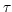

Subsections
DynamicSpikingCbSynapse
The conductance g(t) of the synapse is increased by
when a presynaptic spike hits the synapse and decays exponentially (time constant  ) otherwise. u and r model the current state of facilitation and depression.
- E :
- Equilibrium potential given by the Nernst equation.
- U :
- The use parameter of the dynamic synapse
- D (sec) :
- The time constant of the depression of the dynamic synapse
- F (sec) :
- The time constant of the facilitation of the dynamic synapse
- u0 :
- Value of the time varying facilitation state variable u for the first spike
- r0 :
- Value of the time varying depression state variable r for the first spike
- tau (sec) :
- The synaptic time constant
- W :
- The weight (scaling factor, strenght, maximal amplitude) of the synapse
- delay (sec) :
- The synaptic transmission delay
- u :
- The time varying state variable u for facilitation
- r :
- The time varying state variable u for depression
- psr :
- The psr (postsynaptic response) is the result of whatever computation is going on in a synapse.
- steps2cutoff :
-